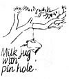

Backyard Wildlife Primer
Mini-manual for identifying animals in their natural habitat, including gray fox and squirrel, blue jay, getting started, cardinal, recommended shrubs and trees for wildlife chart, planning and planting.
By Raymond Zoanetti and the Mother Earth News editors
September/October 1986
MOTHER'S MINI-MANUAL
Landscape for habitat.
A plain, rich in woods and savannahs, swarming with Bisons or buffaloes, Stags, and Virginian Deer, with Bears, and great variety of game, occupies an amazing tract, from the great lakes of Canada, as low as the gulph of Mexico; and eastward to the other great chain of mountains, the Appalachian . . .
- Thomas Pennant (1785)
Our landscape has changed since Thomas Pennant observed virgin America's natural abundance two centuries ago. The lands composing most of Pennant's "amazing tract," and those to the east and west as well, have been paved, plowed, subdivided, and otherwise relegated to human use. And, in the process, we have damaged or destroyed many of the ecosystems that once supported such an awesome diversity of native wildlife.
But the good news is that loss of wildlife habitats is one problem the average person can do something about. Regardless of how much or how little space you occupy on this planet, you have the power to help makethat space hospitable to wildlife. By developing an awareness of the needs of local birds and animals and by taking a few simple steps to help provide for those needs you can help reverse a centuries-long trend of habitat destruction.
And that's only one of the rewards of managing your land for wildlife. In most cases you'll spend less time and money mowing and manicuring your property. The value of your land is likely to increase - according to the National Wildlife Federation, adding vegetation and tree cover can raise property values by 3% to 10%. Of course, there's the sheer enjoyment of watching wild birds and animals benefit from your stewardship. And perhaps most important, the time that you spend learning about and working with wildlife will sharpen your awareness of the ecosystems around you.
And remember: Any piece of land can be managed to support at least some species of wildlife. Generally, the more land you have to work with, the more birds and animals you'll be able to accommodate. But even a quarter-acre suburban lot can serve as a haven for a large variety of wildlife - if the right conditions are present.
The Elements of Habitat
FOR SALE, HANDYMAN SPECIAL: Small, 0-bedroom home, needs work. Walls and roof missing. Lot surrounded by hostile neighbors. Dry well. Local supermarket closed December to May. No streets or recreational facilities. Children unwelcome. Make offer, move in today!
Move in? You wouldn't even consider it - and neither would any other animal. Virtually all of nature's creatures look for the same elements in a homeplace: food, water, cover, and a safe, secure place in which to foster a family. Your job is to provide those elements within the space you can set aside.
Food is probably the easiest of the four necessities to supply; even if you have no more than a high-rise apartment balcony, you can attract birds by putting out a feeder and some seed. As much as possible, though, fruit-, nut-, and seed-bearing vegetation should serve as the major sources of food for birds and other wildlife.
If there's little or no food-bearing vegetation on your land now, you can use feeders until you've had time to establish plantings. Beware, however, the pitfalls of artificial feeding: Overfeeding can lead to overpopulation of some so-called pest species. Also, wild creatures tend to become dependent on feeders and may starve if you don't keep the stations filled.
Water. Surprisingly, many species of birds and small mammals are able to get the water they need from dew, the foods they eat, and places where rain collects. Given a choice, though, most kinds of wildlife prefer water from a pool, pond, or stream . . . and some species require it. Most creatures, in fact, will be drawn to water more quickly than to food.
A birdbath or small, hand-dug pool usually will suffice. But if you have the room, establishing a more permanent water supply, such as a small pond, should be at least a long-term goal, since periods of drought are inevitable, and because aquatic habitat will attract various wetland species that you couldn't expect to attract otherwise. And, of course, in arid regions such as the Southwest, a small, well-vegetated pool will draw an exceptionally large number of birds and animals to your yard.
Cover. Cover is a catchall term for any form of shelter from enemies and the elements. Just as different species favor different foods, cover preferences vary: brush or rock piles for shrews . . . open forest for fox squirrels . . . pine groves for mourning doves . . . water for turtles. Cover is especially crucial near foraging areas; most foodbearing vegetation serves as its own cover, but you may need to add sheltering trees, shrubs, and grasses close to other popular feeding places such as ponds, birdbaths, and artificial feeders. Likewise, it's important to establish travel lanes - dense strips of cover such as hedgerows, shelterbelts, or other forms of obscuring vegetation - to connect pockets of habitat and allow animals to reach such areas without exposing themselves to danger.
Reproductive areas. Most species require a very specific kind of cover in which to raise a family. Some birds and mammals nest on the ground (some, such as moles, nest underground ) . . . others, such as cardinals, nest in thick brush . . . and still others-squirrels and woodpeckers, for example - require woodland. Regardless of the specific type, nesting areas are characteristically located in safe, relatively inaccessible places - which in most cases means mature vegetation. If there is little or no such growth on your land now, you may need to provide artificial reproductive cover - birdhouses, nest boxes - until you've had time to plant and establish natural stands.
In any case, remember: Providing quality breeding habitat is the primary objective of wildlife management. Furnishing food and other comforts is important, but your main goal should be to create a stable, secure place in which wildlife can live and propagate.
Getting Started
Before you can decide what to do to make your property more useful to wildlife, you'll need to take a good look at it as it is now. Your analysis can be as casual as taking an extended stroll around your yard and mentally noting its significant features. A more useful approach, though, is to make a map on which you can record your observations and plan improvements. Start by drawing a sketch of your lot's borders; then add in all the nonbiological elements on your property: your house, roads, fences, garden, patio and recreation areas, streams - anything, except vegetation, that takes up space on your land. This is your "base map." You'll probably want to make several copies, so that you can record different kinds of information on separate maps.
Now examine and map your land for the following:
* Existing vegetation. Using a field guide for help, identify as many of your trees, shrubs, flowers, grasses, and other plants as possible. Draw in their positions on your map, and make a list of common names and/or genus and species keyed to the map. A less exacting approach - but one that may be more practical - is to simply note the various vegetational zones on your property and outline those areas on your map, adding an appropriate description: wetland thicket, dense conifers, mixed deciduous hardwoods with shrub understory, etc. Or you can combine the two approaches by specifically identifying some of the more prominent trees and plants, and then noting general zones as well.
* Distinct environments. Since different types of plants and animals favor different kinds of living conditions, it's useful to delineate any distinct environmental zones on your land. By observing not only the types of vegetation but also the characteristic soil, climatic, and other environmental conditions in which each is growing, you'll gain valuable clues about which types of trees and shrubs would be best to plant in each area, and about the kinds of animals that you're likely to be able to attract.
Surrounding land use. This is an especially important factor if you have little land of your own, since many species of wildlife require territories of at least a few acres. If your neighbors are also providing habitat - or if you can get them interested in doing so - your combined efforts will create a larger ecological unit, useful to a larger variety of wildlife. In any event, it's important to recognize whatever conditions do exist. Fallow fields, barking dogs, noisy streets, vegetable gardens, pine groves, thick shrubbery - all such neighboring elements need to be considered in the complete picture.
* Existing wildlife. What kinds of wildlife have you seen recently? Where and when have you seen it? Are there areas that seem particularly populated with - or devoid of - birds, animals, amphibians, insects? If you observe nests, game trails, or other signs of wildlife use, note their locations. Some backyard wildlife managers keep a continuing log of wildlife sightings, recording new residents, visits from migratory species, seasonal population fluctuations, and other data.
Your analysis of your land can be as comprehensive as you wish. But the real point of this process is not so much to produce detailed maps and species inventories as it is to provide a useful planning tool: a "before" picture that can serve as a starting point from which to build more useful and varied habit at.
Planning and Planting
The single most important element in wildlife habitat is vegetation; plants can provide food, cover, and reproductive sites, and - because they collect dew, as well as prevent erosion and control runoff - they also contribute substantially to water resources. If your land is already in a near-natural state, with a wide variety of trees, shrubs, flowers, and herbs, you're way ahead - your main job as a wildlife manager may be simply not to do anything to destroy the existing habitat. But if you're like most landowners, there are at least some areas on your property that will benefit from additional plantings.
As you study your maps and attempt to design a layout for plantings, keep the following in mind:
* Vegetative diversity is the key to good habitat. The more kinds of plants you use to provide food, cover, and reproductive areas for wildlife, the more kinds of wildlife you will attract. This means varying not only the species of plants, but basic physical types of vegetation and growing areas: tall trees mixed with smaller trees and shrubs; open spaces blended with closed, thickly planted areas; bramble patches bordered by meadowlike grassy expanses (including lawns). Combined, these create a pleasing, natural, supportive landscape. Be sure to include as many food-bearing plants as possible, in enough variety to assure an adequate supply of edible fruit, nuts, and seeds throughout the year.
Trees can be used to provide the right environment for a multitude of birds and animals, but of course require time to mature. If you're starting with an open lot, a good first step is to plant trees around the perimeter of your property, to eventually serve as a frame for lower-growing vegetation. If you already have older trees on your property, consider augmenting them with additional trees and with an understory of smaller, shade-tolerant species such as redbud, dogwood, and beech. Deciduous species are important because, once they mature, they provide fruit, nuts, seeds, or berries for a large variety of birds and mammals. Conifers, on the other hand, supply food for fewer types of wildlife . . . but grow more quickly and provide vital thermocover, or protection from snow and frigid winds.
Shrubs are particularly useful because they develop sooner than trees, and provide food, cover, and reproductive sites for many birds and animals. Use them to create a diverse understory among existing stands of trees. Plant shrubs around trees, and around your home and other manmade structures, to blend such elements into the landscape. As much as possible, use appropriate food-bearing species such as elderberry, fire thorn, serviceberry, or manzanita. Refrain from pruning the lower branches of shrubs; leave them to provide cover for ground-nesting wildlife.
Grasses, flowers, and ground covers are also vital elements in habitat design, not only for their inherent value as food and cover for such species as hummingbirds and seed-eating songbirds, but because they support insect o populations that in turn attract many additional kinds of birds. Low herbaceous growth serves as a useful landscape design tool, too, adding color and texture and filling in open spaces between other vegetation. Plant both annual and perennial grasses and flowers.
* Edge is essential. Simply stated, edge is any area where two or more types of vegetation come together: where forest meets meadow, grasses and flowers give way to shrubs, pasture becomes marsh, marsh meets pond. Because such an area contains a greater diversity of plant life, it is used by a greater number of species of creatures than is any one of the more distinct zones. Studies have shown that the population and diversity of wildlife species increase proportionately with the size and (interestingly) irregularity of edge habitat. A way to create one kind of edge habitat quickly is to stop mowing the outer few feet of the perimeter of your land, or to take an out-of-the-way comer of your property out of the mowing cycle.
* Connect isolated habitat areas. Small, scattered pockets of habitat - a lone brushy area, a pond in an open field, a small cluster of trees surrounded by lawn - are of little use to animals. To make the brushy area's cover, the pond's water, and the fruit and nuts from the trees accessible to the species that need them, such areas should be tied together whenever possible by travel lanes made up of small trees and shrubs, tall grasses, or other dense vegetation.
* Choose plant varieties appropriate to your climate and growing conditions. As much as possible, use varieties of trees, shrubs, flowers, and other vegetation native to your region; those species have had centuries to adapt to your area's environment, and are hardier than so-called exotics. Take note of the natural vegetation and the kinds of conditions in which various types grow - willows in wet areas, pines in open, sunny sites, and so on. Then choose the appropriate native species for the conditions on your land. [EDITOR'S NOTE: According to the National Wildflower Research Center, over 2,500 species or subspecies of native plants are threatened with extinction. As a general rule, don't gather native plants from the wild. Instead, buy natives from nurseries that offer, or specialize in, such species - and before you buy, be sure the nursery propagates its own stock, or at least collects only from sites destined to be cleared.]
The chart on page 85 shows a few recommended combinations of wildlife-supporting species, but keep in mind that the conditions on your property may require different vegetation. Local nursery owners should be able to help you make selections suitable to your specific needs; show them your site maps and discuss the soil types, solar exposure, and other factors. Remember to get their advice on planting techniques for the varieties you choose, too. And be sure to mention that you're planting to create wildlife habitat. In some cases, you'll want to space plantings more closely than is ordinarily recommended, to produce extra-dense growth.
* Plan for the long term. Don't forget to consider what each plant's height and width will be at maturity. Place taller vegetation in the rear, and plant only low-growing vegetation near your home so that your view won't be obstructed. In most cases it will take five to 10 years for shrubs to reach full size; hardwood trees such as oaks and hickories can take 30 or more years. Rather than trying to do all your planting in one season, plan your work over a period of at least three to five years, to create varied, uneven-age stands of vegetation. If you're working out a planting strategy on a site map, it may help to draw tall vegetation in one color, medium in another, and low growth in still another - or to sketch each year's plantings in different hues - so that you can better visualize the long-term layout.
Other Habitat Improvements
Birdbaths and pools. A reliable water source will make your property a popular place among birds and animals. Fortunately, there are several simple, easy ways to provide water regardless of how much (or how little) space and money you have to spare. Just be sure to locate any water source in an open area, so that wildlife will have a good view when drinking or bathing, but near cover, to offer an avenue of escape from predators. Remember, too, that shallow water will attract a greater diversity of species than deep water.
The ideal birdbath is made of cement or pottery and set at least three feet off the ground, with overhanging branches nearby, so that birds have time and cover in which to escape from predators. The water in the bath should be no more than three inches deep. Since birds are especially attracted to moving water, you can increase the number of visitors by hanging a dripping hose (or just a plastic milk carton with a small pinhole in the bottom) from a branch over the bath.
Almost any receptacle that will hold water and that can be sunk in the ground can serve as a ready-made pool for wildlife: an old sink, even wooden barrel halves. Many nurseries now sell preformed garden pools, in a variety of shapes and sizes, that are easily installed. If you live in a region with heavy clay soil, you may be able to simply dig a small pool that will hold water - make it 12 to 18 inches deep overall, with gradually sloping sides, and then line the walls with rock, brick, or cement block to keep them from caving in.
If your area's soil is more porous than clay, or if you want to build a pool larger than a yard or two wide, line the pool with one or two layers of PVC plastic sheeting (be sure to remove any sharp rocks or roots that could puncture the liner). Then anchor the plastic by placing dirt and rocks around the perimeter.
Probably the best place to dig a pool is in an existing spring or stream, where water will seep into the excavation and keep it filled. Another way to develop such sites is to build several low dams with rocks, soil, logs, or a little cement, to create a series of shallow, welcoming pools.
Regardless of the type of pool, it's important to establish a plant community in and around it to oxygenate and cool the water and provide cover for its users. In standing water, add a layer of soil and sand to the bottom and introduce such plants as bladderwort, water milfoil, fanwort, and pondweed. Water lilies grown in pots and anchored to the bottom of the pool, or set on a pedestal at about midlevel, will serve as attractive loafing areas for dragonflies, frogs, and songbirds. Moisture-loving plants such as arrowhead, cattails, jack-in-the-pulpit, Virginia bluebell, and jewelweed can be set around the perimeter of the pool.
Brush piles. These are particularly useful if there's little or no ground cover on your property, and will provide shelter and resting places for birds and small mammals - especially rabbits. Although any loose heap of limbs and branches will suffice, it's best to erect a more permanent structure that won't settle over time. Start by building a base: rocks eight to 12 inches in diameter, arranged in several clusters of small piles about a foot apart . . . or four logs about six feet long and six inches in diameter placed parallel to one another, eight to 12 inches apart, and topped with either flat stones or a second layer of logs placed perpendicular to the first. Then cover the base with brush, using larger limbs first and adding increasingly smaller branches, to a height of four to eight feet. Such piles should be located near feeding areas, preferably in open territory such as an overgrown field or forest clearing. Avoid placing brush piles near gardens, or beneath trees where hawks and owls could make easy prey of the residents.
One way to make a brush pile quickly is to lean six to 10 discarded Christmas trees against a wire or wooden support. Position the trees so that they will block prevailing winter winds and form protective snowdrifts. Also, you can build a living brush pile by cutting partway through the lower limbs of a conifer with close-to-the-ground branches, so that the boughs droop to the ground and form a protective "tent."
Snags. The term snag refers to standing dead timber or dead and decaying limbs on large trees. When a tree dies and begins to rot, woodpeckers (and other species of birds known as primary hole nesters) excavate cavities in the softening heartwood, and use the holes for roosting and nesting. Eventually, they abandon the snag - leaving ready-made homes for other cavity-nesting species (secondary hole nesters) such as squirrels, kestrels, pine martens, owls, flickers, and raccoons. Many additional species of birds and small mammals require, or at least prefer, snag habitat for feeding, since the weakened wood plays host to a variety of insects.
Wildlife biologists have determined that many species have specific snag requirements: Pileated woodpeckers, for example, require snags greater than seven inches in diameter for foraging, and greater than 20 inches around for nesting. Ten or more snags per acre is considered optimal habitat for pileated woodpeckers. Bluebirds, on the other hand, favor habitat that offers them four to five standing dead trees over eight inches in diameter per 20 acres. Downy woodpeckers require four or five snags six inches in diameter or larger per acre; western red squirrels need specimens 20 inches around or larger for food caches and nesting sites. Of course, if you're managing habitat to attract wildlife in general, you can take a more casual approach: Just try to maintain a half-dozen or more snags per acre of woodland, providing to whatever extent possible a mix of different types and diameters of trees.
Don't remove snags from your land unless they present a safety hazard. If there is no standing dead wood on your land but you have a number of trees between six and 20 inches in diameter, you may want to create some snags by girdling several trees: Using an axe, remove a three- to four-inch-wide belt of outer and inner bark from around the trunk. After several years, the trees will decay to the point that they become suitable for feeding and cavity nesting. Also, you can create cavities in such trees as elm, ash, mulberry, and sycamore by cutting off a three-inch-diameter limb six inches from the trunk. The stub will decay over time and leave a hole.
Artificial nests. Of course, you can attract cavity-nesting birds to your yard even if you don't have snags or enough mature trees to create them; people have been using artificial nests, better known as birdhouses, for centuries.
Many stores sell ready-made birdhouses, or you can build your own. Different species of birds require houses of different designs and dimensions (see the chart), but the hallmarks of a quality birdhouse are the same: The house should be made of a durable, weather-resistant wood such as cypress, cedar, poplar, or pine, at least 1/2" thick . . . the roof should be pitched sufficiently to shed rain, and should have an overhang extending two to three inches over the entrance hole . . . there should be at least a few small holes in the bottom for drainage, and one or two small holes in the walls near the top for ventilation . . . and the inner surface of the house's front should be roughed or grooved to help young birds climb to the opening. A hinged top, or at least a front attached by wood screws so that it can be removed, makes cleaning easier. (Make sure that you do clean the houses after every nesting season, to prevent mildew and rot, and to keep parasitic insects out.)
You can also build artificial accommodations for some species of small mammals. Red, gray, and fox squirrels all prefer natural dens, but in woodland where snags are scarce they can be attracted with nest boxes measuring about 18" to 20" high, and 8" to 10" wide and deep. Use 3/4" to 1" cypress or exterior- or marine-grade plywood. The entrance can be either round (3" to 4" diameter) or square (2-1/2"), and should be located no more than 2" from the top, offset close to one side. The box's bottom can be 1/4" to 1/2" wire mesh to allow waste to drop through (the residents will line the box with leaves). Hang the nest at least 20 feet above the ground, in the crook of a limb, next to the main trunk of a mature hardwood, with the opening adjacent to the trunk. Use heavy-gauge wire to bind the box to the tree; pass the wire through holes or screw eyes in the box and around the trunk, making sure to crimp the wire to allow for tree growth (see the illustration). A similar box of somewhat larger dimensions (25" high and 10" to 12" wide and deep, with a 6"- to 8"-diameter entrance hole) can be built for raccoons.
Ground-dwelling mammals such as rabbits and foxes often use abandoned woodchuck burrows for winter shelter. In new clearings or other places where such homes aren't available, the animals can be accommodated with an artificial burrow: an 18" X 18" X 12" box, built of 3/4" oak or tulip poplar, with a removable lid and two drain-tile entrances. Bury the box at or just above ground level in well-drained soil, and lay 5"- to 6"-diameter field tiles at a 30° to 45° angle from the ground to two semicircular openings at opposite ends of the box's bottom. It isn't necessary to build a floor for the burrow, but it is important to cover the lid with rocks and brush to keep out light.
Feeders and food plots. Feeding stations are critical on newly established habitat where there is little or no food-producing vegetation. But even on mature habitat, where trees and other plants serve (as they should) as the major food source, feeders play an important role: They provide supplemental sustenance during winter and other critical periods, and they give your family an opportunity to view the creatures that visit or live on your land.
HIDDEN HAZARDS AND POTENTIAL PITFALLS OF BACKYARD HABITAT
The pleasures of managing your land to attract wildlife are many - but problems, too, inevitably come with the job. The best way to prevent them is to anticipate them . . . so here's a review of some of the more common trials and tribulations confronted by backyard naturalists:
"Weed" ordinances and other municipal or neighborhood regulations. Most communities have an ordinance that specifies a maximum permissible height for "weeds," which are usually loosely defined as any plant that is "not useful or ornamental." If you intend to let part of your property go natural, or to plant extensive stands of native wildflowers or grasses, read the ordinance. And talk with your neighbors and the local authorities; tell them of your plans and the reasons why you want to offer habitat to local wildlife. Emphasize your willingness to cooperate. Perhaps, if you proceed with your improvements radually, adding wildflowers and grasses a little at a time, the beauty and usefulness of your plantings will speak for themselves.
Usually, if all parties keep an open mind, some kind of understanding can be reached. If you do find yourself in court over the issue, you can take some comfort in knowing that - based on past decisions - your chances of winning are good.
Be sure to check for other municipal ordinances and neighborhood rules that might affect your habitat plans, too: Many towns, for instance, have stringent codes regulating the construction of ponds and even small pools.
Neighbors. The relative attractiveness of "weeds" is only one possible area of contention between wildlife-conscious homeowners and neighbors who may or may not share the same interest. Honest communication is, of course, a key element in avoiding disputes. But, also, keep your neighbors in mind when you're designing and planting. For instance, don't put brush piles or heavy cover near your next-door neighbor's garden.
Pets. Predators play an important role in the environment, but your pet - as much as you may love it - is not a part of the natural scheme of things and can be a serious threat to wildlife you've attracted to your yard. If you have a dog or a cat, try to keep it indoors or penned at least during the early morning and early evening, when birds and animals are most active. You may also want to put a bell on your pet's collar. Also, of course, place all feeders, birdhouses, and nest boxes near or in cover.
Gardens and orchards. The old saw "Good fences make good neighbors" holds especially true when those neighbors are hungry rabbits, raccoons, and other wildlife. A simple two- or three-strand electric garden fence like the one described in issue 99's Mother's Handbook is the method of choice for keeping out small mammals. If birds raid your fruit trees, cover the limbs with inexpensive, lightweight plastic netting. If wild critters are nibbling the bark of a tree's trunk or climbing up to get at the fruit, wrap an 18"-wide band of metal around the trunk, or encircle it with a small fence.
Unwelcome houseguests. Come cold weather, the squirrels that so eagerly took up residence in your oak trees just might decide they prefer a warmer place for the winter: say, your attic. You can't blame wild animals for seeking out a comfortable house . . . but if you'd just as soon they didn't take up residence in your house, be sure to seal up all unwanted openings. Also, remove other sources of temptation: Keep garbage cans in a closed shed or garage, for example.
Some types of birds are ground feeders and others prefer dining higher up, so be sure to include a variety of feeders, homemade or commercial-shelf and hanging feeders, seed tubes, etc. Place them at different levels, spaced well apart in the most sheltered areas of your property, near cover. If no such shelter exists, plant clumps of three to five pines or evergreen shrubs near the feeding stations to provide thermocover.
You can stock your feeders with commercial seed mixtures. Another approach is to buy seed separately from farm and garden stores, local Audubon chapters, or nature centers. According to the U.S. Fish and Wildlife Service, nearly all seed-eating birds can be attracted with just two types of seed: white proso millet, which is preferred by ground-eating species . . . and black oiltype sunflower seed (the smallest of the sunflower group), which is a favorite of a wide variety of birds. These can be used as the core of your feeding program, but you should also offer such nutritive (but somewhat more species-specific) seeds as black- and gray-stripe sunflower, red proso millet, milo, peanut kernels, German millet, and niger thistle. The more varied the menu, the better.
Beef suet, which is available free or at low cost in meat markets, will help birds maintain body heat during cold winter weather. If you simply put suet outside, a greedy jay or starling can make off with it in one swoop - so hang the fat in (for example) a plastic mesh bag, a holder made of wire mesh, a wire soap dish, or a small log drilled with several half-inch-deep, one-inch-diameter suet holes. Or dip pinecones in melted suet and tie the coated cones to branches.
Hummingbirds, which can be attracted in almost all parts of the country by providing a source of nectar, require special feeders that dispense a solution of sugar water. It's best to locate such feeders near natural nectar sources such as honeysuckle or fuchsia because, like any confection, sugar water provides only a quick source of energy and little or no protein. Also, be sure to boil the sugar solution, and to clean the dispensers with hot water frequently - twice a week is ideal - to prevent harmful molds from developing. One more caution: Don't use honey solutions in hummingbird feeders; honey can foster bacteria that cause a fungus to grow on the birds' beaks.
If you find that your seed feeders are dominated by pigeons, sparrows, grackles, cowbirds, and other large or aggressive species, while the smaller songbirds are kept at a distance, scatter some feed (cracked corn, stale bread, white millet) on the ground a few yards from the stations to draw the bigger birds away - or simply add more feeders to reduce the competition. If squirrels and chipmunks become a problem at your feeders, you can keep them from pole-mounted stations by placing a metal collar or an inverted plastic flower pot on the pole just below the feeder. If the robbers are climbing from a branch to get at a hanging feeder, wrap a metal sleeve around a portion of the limb. Or better yet, offer the critters their own food: an ear of corn placed on a nail in a tree, or some peanut kernels scattered near cover.
Food plots - small patches of cultivated grasses, grains, or garden crops intended for wildlife - offer both advantages and disadvantages. If your property already provides a diverse menu from natural vegetation, or if you keep a variety of feeders well stocked with nourishing edibles, a food plot may be unnecessary. But if for some reason you can't fill feeders regularly, and if there's little other food-bearing vegetation to provide sustenance, a planted patch may be the answer. Several small, irregular plots (50 to 100 square feet) are better than one large area. Use a mixture of early- and late-seeding varieties of grasses and grains appropriate to your region: lespedeza, grain or cane sorghum, buckwheat, millet, dwarf corn, bobwhite soybean. Simply till the soil lightly and broadcast the seed. An alternative to planting food plots exclusively for wildlife: Plant buckwheat, rye, or other cover crops in your garden as space becomes available (and don't plow them under until spring), and let late-maturing vegetables go to seed.
You've Only Just Begun
More than a mere virtue, patience is a necessity when it comes to creating and maintaining wildlife habitat. There is simply no rushing nature. If you're starting from scratch with an open expanse of lawn, don't expect a stampede of home-hungry birds and animals to your yard in the first year-or even in the first two or three years. At the outset, only a few sparrows may visit your feeders, and perhaps a squirrel or two will occasionally lope across your lawn. But gradually, over time and with your careful nurturing, you'll find yourself host to a growing wildlife population. That once-barren yard, besides simply looking better with abundant color and greenery, will come alive with the sights and sounds of creatures that - without your care - might not have survived, or might never even have been born. And in return, those creatures will give you and your children countless hours of enjoyment, of watching and learning about nature and about the roles all beings play in it. Inevitably, managing your property for wildlife becomes a way of life, a continuing exploration of a world both astonishingly simple and complex.
Chances are, the natural abundance of the "amazing tract" that Thomas Pennant described 200 years ago is gone forever. But someday, with a little work and patience, you just might find that you, too, have discovered - and even helped to create - an endlessly fascinating "amazing tract": your own backyard.
ILLUSTRATIONS BY KAY HOLMES STAFFORD
FOR FURTHER INFORMATION
There is a tremendous amount of literature and support available to help you manage your land for wildlife. The following is only a partial listing of sources.
Habitat Programs
The National Wildlife Federation, Backyard Habitat Program, Department ME1, 1412 16th St. N.W., Washington, DC 20036-2266.
The NWF's well-known Backyard Wildlife Habitat Program offers homeowners an opportunity to certify their yards as official NWF habitat - but only if their property meets exacting criteria for food, cover, water, and other features. So far, some 3,500 households have registered their yards. Among a variety of helpful publications offered by the NWF is its comprehensive Gardening With Wildlife Kit, an attractive package of habitat planning and management materials, including an excellent 64-page book, Plant an Oasis for Wildlife, as well as a planting guide wheel, a landscape template and graph paper, sample habitat layouts, birdhouse and feeder plans, a beautiful calendar/journal offering month-by-month tips for backyard naturalists, and more.
For a free packet of information on the habitat program, write to the NWF at the above address. To order the Gardening With Wildlife Kit, send $16.95 plus $2 for handling.
The Brooks Bird Club, Inc., 707 Warwood Ave., Wheeling, WV 26003.
The Brooks Bird Club's Wildlife Sanctuary Program was started in 1973 and so far has participants in every state and several foreign countries. All you have to do to register your land as a wildlife sanctuary with the BBC is fill out an application (which includes a pledge that you must sign saying you'll manage the property in a manner that protects its natural flora and fauna) and send it along with $1 for processing and postage. Also, the club offers attractive 9" X 12" Wildlife Sanctuary signs, made of 30-gauge steel with black copy on yellow enamel, for $2 each plus postage: ($1 for one sign, $1.50 for two, $2 for three, $2.50 for five). For more information on the Brooks Bird Club and a sanctuary application form, send a long, self-addressed stamped envelope to the above address.
Local Organizations
Local chapters of the National Audubon Society and other birdwatching, conservation, and natural history organizations can be rich sources of helpful information. For the names of such groups near you, look in the yellow pages under "Clubs" and "Associations."
Government Agencies
The U.S. Fish and Wildlife Service, the U.S. Soil Conservation Service, state and county agricultural extension departments, state environmental or parks and recreation departments, and many more governmental agencies on the federal, state, and local levels can offer invaluable assistance to the backyard naturalist. (Some state forestry divisions can even provide you with tree seedlings at very low cost.) If you can't find appropriate organizations in the white pages of your phone book, you'll find complete listings of virtually all conservation- and wildlife-oriented organizations, both private and governmental, in the National Wildlife Federation's Conservation Directory 1986, available in most libraries or for $15 plus $2 shipping from the NWF, 1412 16th St. N.W., Washington, DC 20036-2266.
Nurseries
Many nurseries today offer native species; most can provide excellent advice on selecting and planting vegetation for your climate and growing conditions. An excellent guide to local and mail-order nurseries, both retail and wholesale, and to the characteristics and availability of about 1,300 kinds of trees, shrubs, and other foliage is Nursery Source Manual: A Handbook, available for $3.05 postpaid from the Brooklyn Botanic Garden, 1000 Washington Ave., Brooklyn, NY 11225.
Universities and Colleges
All institutions of higher learning have superb libraries containing up-to-date reference books and scientific periodicals. In addition, many individual departments - agriculture, ecology, botany, zoology, forestry, for example - are rich sources not only of literature but of expertise and advice.
Recommended Reading
We can't possibly list all, or even a significant fraction of, the many nature- and wildlife-oriented books and publications available. The following, though, will get you started:
Books on wildlife, natural landscaping, practical ecology:
Wildlife In Your Garden by Gene Logsdon (Rodale Press, hardcover, $14.95), Nature's Design by Carol A. Smyser (Rodale Press, hardcover, $22.95), The Earth Manual: How to Work With Nature to Preserve, Restore, and Enjoy Wild Land-Without Taming It by Malcolm Margolin (Heyday Books, P.O. Box 9145, Berkeley, CA 94709, $8.95 postpaid).
Field guides:
The Audubon Society Nature Guides, available in several regional editions: Deserts . . . Atlantic and Gulf Coasts ... Eastern Forests . . . Grasslands . . . Pacific Coast . . . Western Forests . . . and Wetlands (Alfred A. Knopf, softcover, $14.95 each).
Periodicals:
Environmental Reconstruction News, a monthly four-pager containing timely, practical backyard habitat tips and source information, geared primarily to eastern regions. Published by a professional wildlife landscaper, available for $10 a year from Environmental Reconstruction, P.O. Box 1292, Hightstown, NJ 08520.
National Wildlife, the National Wildlife Federation's bimonthly membership publication ($12 a year, includes membership benefits). NWF also offers two monthly children's publications, Ranger Rick (ages 3-5; $12 a year) and Your Big Backyard (ages 6-12; $10 a year). Available from the National Wildlife Federation, 1412 16th St., Washington, DC 20036-2266.
Some articles from our own back issues (see page 136 for ordering information):
"Make Your Own Hummingbird Feeders . . . for Free," issue 52; "Put Birds to Work in Your Garden," issue 64; "A Home for Wildlife," issue 67; "Even Bluebirds Get the Blues," issue 80; "Build a ByeBye Blackbird Feeder!," issue 81; "Wholesome (and Free!) Bird Feed," issue 83; "Helping Injured or Orphaned Wildlife," issue 88.
|
Gray Fox |
Blue Jay |
Cardinal |
|
Rufous-sided Towhee Nest |
Box Turtle |
Young Opossum |
|
|
|
 |
|
|
 |
|
|
|
|
|
|
|
 |
|